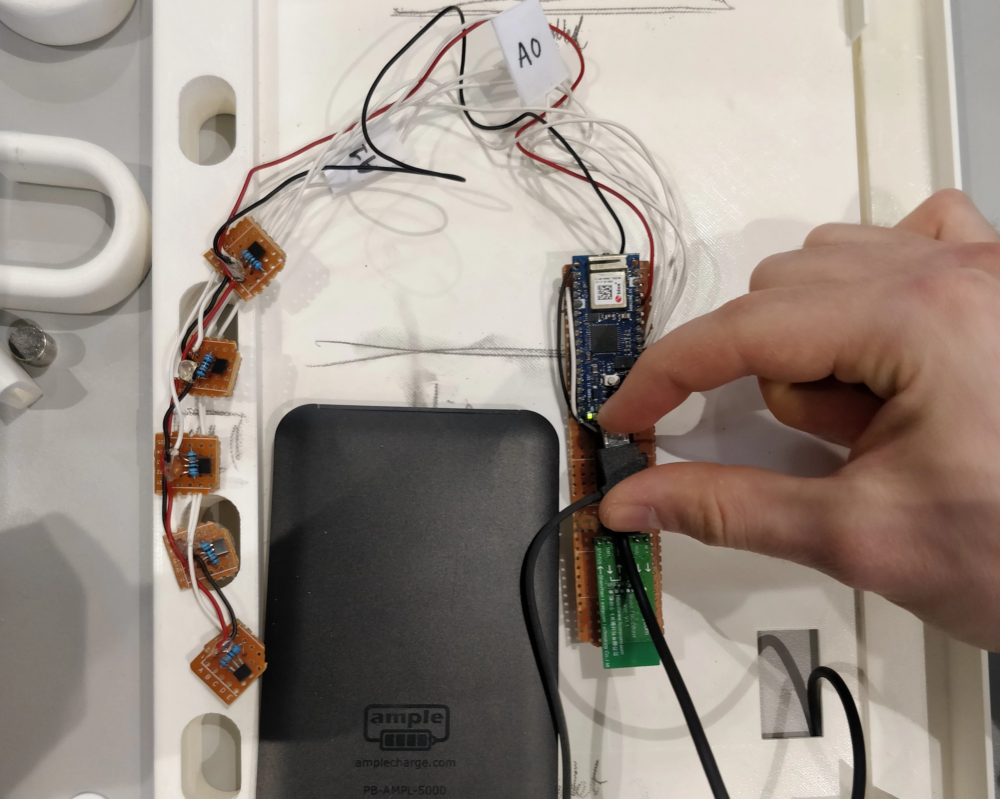
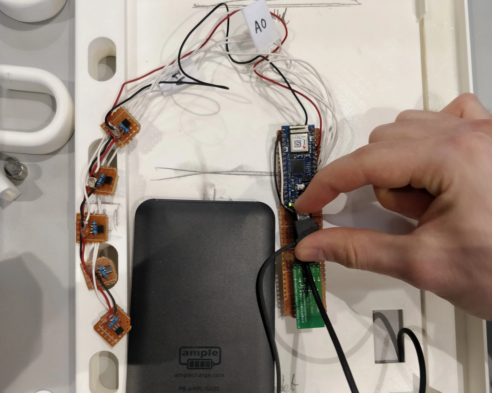

Project 02
2021
University of technology Eindhoven
University of technology Eindhoven
Summary
Project 2 was a project with a consulting mindset. Weekboek is the result of this project in
cooperation with SWZ care center. This care center mainly took care of people with acquired
brain injury at the time. During interviews conducted with the caregivers, but also two of the
clients of SWZ care center The problem to solve was defined. The result of these interviews and
many ideation sessions was Weekboek. A tangible day planner that would be used by people in the
care center to keep track of their day and stay in touch with the care center even when at home.
The idea evolved from the problems people with acquired brain injury experience with keeping the
structure in their day. In this project, the focus lay more on exploring expertise areas which I
had less experience with before this project. These expertise areas are user and society and
business and entrepreneurship.
Roles
• User research
• electronic realization
• physical realization
• electronic realization
• physical realization
Final version of Weekboek
Picture of the final version of Weekboek at the demo day. The final prototype consisted of a
functional app displayed on a tablet but also a tactile user experience in the form of a book where
the physical pages change the content the day planner displays.

Process pictures
The image below shows a picture taken at the SWZ day centre where multiple clients of SWZ were
interviewed to ask them for input on the concept at the time.
.webp)
Process pictures
After the demo day we decided to go on to create a functional prototype to be used for user research
for SWZ. This was decided in cooperation with SWZ as an extracurricular activity. The images below
show a this design and prototyping process.
 

This is just a sidequest you had to hide text as easter eggs which looks like a line